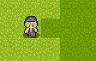

【システム変数/文字列一覧】
システム変数は「変数操作」などで指定可能な、ゲームシステムのパラメータ集です。システム文字列は下のほうにあります。
・システム変数一覧
・システム文字列一覧
[ システム変数一覧 ]
| Sys0：顔ｸﾞﾗﾌｨｯｸ番号 顔グラフィック番号を指定します。文章入力時、一行目に「@[数値]」と入れたとき、[数値]の値がこの顔グラフィック番号に格納されます。 Sys1：ﾒｯｾｰｼﾞｳｨﾝﾄﾞｳ X座標 Sys2：ﾒｯｾｰｼﾞｳｨﾝﾄﾞｳ Y座標 「文章の表示」コマンドによる文章の表示位置を指定します。ここで指定する座標は、文字の左上の座標となっています。-1を入れるとデフォルト位置に指定されます。 この座標は「文章の表示」が実行されたときの値が使用され、文章の表示中は値を書き替えても文字の座標は動きません(2022/12/03追記）。 Sys3：選択肢ｳｨﾝﾄﾞｳ X座標 Sys4：選択肢ｳｨﾝﾄﾞｳ Y座標 「選択肢」コマンドによるウィンドウの表示位置を指定します。ここで指定する座標は、選択肢ウィンドウの上辺中心の座標となっています。-1を入れるとデフォルト位置に指定されます。 この座標は「選択肢」コマンドが実行されたときの値が使用され、選択肢表示中は値を書き替えても選択肢の座標は動きません(2022/12/03追記）。 Sys5：ﾎﾟｰｽﾞｶｰｿﾙX (Sys1に足した位置) Sys6：ﾎﾟｰｽﾞｶｰｿﾙY (Sys2に足した位置) 文章のキー待ち状態に出てくるポーズカーソルの「メッセージウィンドウ左上(Sys1、Sys2)からの相対位置」を指定します。ここで指定する座標は、ポーズカーソルの上辺中心の座標となっています。 このポーズカーソルの座標は「文章の表示」中であっても値を入力すると即座に座標変更が反映されます。Sys1～4の座標指定とは挙動が違うので注意してください(2022/12/03追記）。 Sys7：選択肢次回初期位置(0,1,2...) 選択肢の次回表示時、どの選択肢を初期位置にするかを指定します。0が一番上の選択肢、1が2つめの選択肢……となります。なお、この変数は選択肢が終了した時点で自動で0に戻ります。 Sys8：基本フォントサイズ コマンドの「文章の表示」や「ピクチャ」の文字列ピクチャにて、表示する基本フォントサイズを指定します。 Sys9：ﾒｯｾｰｼﾞ速度( X 文字/秒) 「文章の表示」時のメッセージ速度を「X文字/秒」の単位で指定します。 Sys10：ﾒｯｾｰｼﾞ表示ｳｪｲﾄ(X ﾌﾚｰﾑ) 「文章の表示」コマンドが実行されてから文章の一文字目が表示されるまでのウェイトを指定します。メッセージウィンドウを表示する際など、このウェイトを指定してタイミング合わせをしてください。 Sys11：ﾋﾟｸﾁｬ文字速度( X 文字/秒) 「ピクチャ」の文字列ピクチャ表示時のメッセージ速度を「X文字/秒」の単位で指定します。 Sys12：文章の表示 実行中？(1=ON) (Ver3.577で改名) 読み込み専用の変数です。「文章の表示」コマンドで文章が表示されている間だけ1が格納され、それ以外の状況では0が格納されます。 並列イベントで使用することになるでしょう。 Sys13：ｲﾍﾞﾝﾄ実行中？(1=ON) 読み込み専用の変数です。「並列実行“以外”のイベント」が実行されている間だけ1が格納され、それ以外の状況では0が格納されます。 なお、並列実行イベントから「イベントの挿入」を行ったイベントは、起動条件が何であれ並列イベントとして処理されますので、ご注意下さい。 Sys14：選択肢ｳｨﾝﾄﾞｳ表示する?(1=ON) 「選択肢」の表示時、ウィンドウ画像を表示する（1）か表示しない（0）かを指定できます。 Sys15：方向ｷｰﾘﾋﾟｰﾄ初ｳｪｲﾄ(ﾌﾚｰﾑ数指定) Sys16：方向ｷｰﾘﾋﾟｰﾄ次ｳｪｲﾄ(ﾌﾚｰﾑ数指定) 「キー入力受け付け」で「キーが押されるまで待つ」にしたとき、方向キーがリピートされるまでの時間を指定します。まず前提として、ボタンを押しっぱなしの際のリピートは「（押す）カッ、カカカカカカ」というリズムで動作することを想定しています。 ここで、初ウェイトは最初の「カッ」の後のウェイト、次ウェイトは「カカカカ」の間のウェイトを指定します。リピート不要の場合は、これらの値を非常に大きな値にしてください（10万など）。 Sys17：選択肢SE番号：決定(Sys3) Sys18：選択肢SE番号：選択(Sys3) Sys19：選択肢SE番号：ｷｬﾝｾﾙ(Sys3) 選択肢表示時の決定/選択（カーソル上下時の音）/キャンセル時のSEを指定します。効果音はシステムDBタイプ3のSEから読み込まれます。 ※なお、このSys18で設定した「選択」効果音は、「キー操作」で選んだ場合のみ再生され、「マウスカーソル」で選んだ場合は音が鳴りません。 Sys20：選択肢ｶｰｿﾙ現位置(0,1,2..非選択時:-1) 読み込み専用です。選択肢の「現在のカーソル位置」が格納されています。 基本的に、選択肢を実行したのとは別の並列イベント内でリアルタイムの選択位置を取得する目的で作られています。 選択肢が終了した後はそのフレーム中だけ選択位置の値が保持され、1フレーム後には「-1」に戻ります。 （つまり、「選択肢の分岐」先で選択位置を取得したい場合は、ウェイトも入れず即座に「Sys20」を得る必要があります） Sys21：文字影付ける? この変数に1以上の値を入れると、「文章の表示」や「ピクチャ」の文字列ピクチャにて、文字から指定ピクセル分離れたところに黒い影を付けることができます。 Sys22：選択肢ｶｰｿﾙ表示ﾓｰﾄﾞ?(0=通常,1=加算) 選択肢のカーソルを、ピクチャ処理で言う「通常」モードで描画にするか「加算」モードで描画にするかを指定できます。 Sys23：ルビのフォントサイズ [Ver2.20で実装] 特殊文字のルビ\r[A,B]で使用されるルビのフォントサイズを指定できます。 「文章の表示」や「文字列ピクチャ」を「表示」した時点のこの値が、その文章のルビのフォントサイズとして使用されます(Ver3.202より)。 Sys24：[読]ｾｰﾌﾞﾃﾞｰﾀ読込判定(1=成功 0=失敗) 読み取り専用変数です。「ファイル操作」で他セーブデータの変数を読み込む際、そのセーブデータが存在するかどうかを判定するのに使えます。 例：セーブデータ1番が存在しないときにセーブ1番のシステム変数24番を読み込むと、0の値が格納される。セーブデータ1番が存在する場合は1が格納されている。 Sys25：現在ｾｰﾌﾞﾃﾞｰﾀ番号(0～) 現在のプレイが、どの番号のセーブデータから読み込まれたものかを取得できます。セーブ時、またはロード時に値が変化します。 例：セーブデータ「3」番を選んでロードすると、ロードされたプレイでは「Sys25：現在セーブデータ番号」には3が格納されています。 ※なお「数値」でなく「文字列変数」を使ってセーブまたはロードを行った場合、この値は「0」になります。 Sys26：選択肢ウィンドウX余白 選択肢ウィンドウの横の余白をピクセル単位で設定します。 Sys27：選択肢ウィンドウY余白 選択肢ウィンドウの縦の余白をピクセル単位で設定します。 Sys28：経過ﾌﾚｰﾑ数[1000万で一周] ゲーム開始からの経過フレーム数を取得できます。数値の代入も可能です。 Sys29：プレイ時間（1秒単位） ゲーム開始からの、1秒単位のプレイ時間を取得できます。数値の代入も可能です。 Sys30：[読]プレイ時間(ﾐﾘ秒単位) 読み取り専用変数です、プレイ時間のミリ秒単位の値を取得します。取る値は0～999（ミリ秒）です。 [Ver3.00で更新] Ver2.29までは同フレーム中で何度取得してもSys30の値は増えませんでしたが、Ver3.00より、Sys30で得られる「同じフレーム中」のミリ秒単位の時間が進むようになりました。 また、同フレーム中に限り、Sys30が取る値は1000を超えるようになります(最大1999)。 （同フレーム中の処理時間を計算するとき、そのまま引き算可能な値になっている方が扱いやすくなるためです） Sys31：[読]内部FPS(毎秒変化） 読み取り専用変数です、内部処理FPSを取得します。 Sys32：[読]描画FPS(毎秒変化） 読み取り専用変数です、描画FPSを取得します。 Sys33：ﾌﾚｰﾑｽｷｯﾌﾟﾚﾍﾞﾙ(0～2 現在のフレームスキップの度合いを指定します → 0：スキップなし 1：FPS1/2化 2:FPS1/4化 これはConfig.exeと同じくGame.iniの設定を変更するもので、ゲームを終了しても値が引き継がれます。 Sys35：主人公移動中？(1=YES) マスの間にいる? 読み取り専用です、主人公がマスとマスの間を移動中の場合のみ1になります。 隣のマスへ移動してる最中にメニューなどの自動実行イベントを起動すると、 移動先のマスにある「プレイヤー接触イベント」が起動しなくなるという問題があったため、 それの対策用として用意されました。 移動速度が高速な場合、常に0になる場合があります。 （速度が速くて、次のマスへ1フレームで移動してしまうため） Sys36：主人公の影番号(Sys9) 主人公・仲間の影の番号を指定します。影グラフィックはシステムDB、タイプ9から取得します。 Sys37：仲間の車間距離(1あたり1歩) 隊列を組んだときの仲間同士の距離を指定します。初期状態では2（２歩）です。ゲーム設定の移動幅によって距離は変わります。 デフォルトのキャラクター移動幅を「1マス」にしていた場合、車間距離を0にしないと仲間同士が密着しない場合があります。 Sys38:ｷｰﾎﾞ入力中受付可?[1:ﾏｳｽﾀｯﾁ+2ﾊﾟｯﾄﾞ] [Ver3.578で実装] 「文字列操作」の「キーボード入力」中でも「マウス(クリック)」「タッチ」「パッド入力」を「キー入力」コマンドで受け付けられるようにするシステム変数です。 1ならマウスとタッチが有効、2ならパッドが有効、3(1+2)なら両方有効になります。 デフォルトは「0」（キーボード入力中はあらゆるキー・マウスクリック・タッチ・パッド入力を受け付けない）です。 Sys39：[読]ｷｰﾎﾞ入力状態 0=Enter -1=ｷｬﾝｾﾙ 読み取り専用です、「文字列」のキーボード入力が終わったとき、「決定(=0)」されたのか「キャンセル（=-1）」されたのかを取得します。 Sys40：ｷｰﾎﾞ入力文字列 X座標 Sys41：ｷｰﾎﾞ入力文字列 Y座標 「文字列操作」のキーボード入力の際、入力中の文字列をどこに表示させるかを指定します。ここで指定された座標は、文字列の左上です。 Sys42：ｷｰﾎﾞ入力文字ｱﾝﾁｴｲﾘｱｽ[0無/1有/+2ｴｯｼﾞ] （Ver2.02で実装） 「文字列操作」のキーボード入力の際、表示される文字列のアンチエイリアス（なめらか）やエッジ（ふち）の有無を切り替えます。デフォルトは1＝アンチエイリアス付きです。 0＝アンチエイリアスなし、1＝アンチエイリアス付き、2＝アンチエイリアスなし＋エッジ付き、3＝アンチエイリアス付き＋エッジ付き、となります。 Sys43：[読]ﾈｯﾄ/DL済ｻｲｽﾞ(byte) Sys44：[読]ﾈｯﾄ/DL予定ｻｲｽﾞ(byte) Sys45：[読]ﾈｯﾄ/接続速度 Sys46：[読]ﾈｯﾄ/接続時間(秒) Sys47：[読]ﾈｯﾄ/残り時間(秒) Sys48：[読]ﾈｯﾄ/状態 -1失敗 0通信中 1終了 読み取り専用変数です、ネット機能使用時の各種パラメータを取得します。 隠し機能として、Sys48に-1を代入するとネット接続を強制切断することができます。 （変なファイルが残ったりする場合がありますのであまり推奨されません） Sys51：◆ 以下 ｷｰｺﾝﾌｨｸﾞ ◆ Sys52：決定ｷｰ(ｷｰﾎﾞｰﾄﾞ) Sys53：ｷｬﾝｾﾙｷｰ(ｷｰﾎﾞｰﾄﾞ) Sys54：ｻﾌﾞｷｰ（ｷｰﾎﾞｰﾄﾞ） Sys55：決定ｷｰ（ﾊﾟｯﾄﾞ） Sys56：ｷｬﾝｾﾙｷｰ（ﾊﾟｯﾄﾞ） Sys57：ｻﾌﾞｷｰ（ﾊﾟｯﾄﾞ） Sys58：◆ここまでｷｰｺﾝﾌｨｸﾞ◆ キーコンフィグです。「その他1」のキー入力にて、キーボードまたはパッドで押された値（100～または300～の値）をこれらに指定することで、キー設定を変えることができます。 Sys59：決定ｷｰｵｰﾄ連打(1=ON) この値を1にすると、「キー入力受け付け」で「キーが押されるまで待つ」にして決定キーを押しっぱなしにした際、手で連打しているのと同じ動作をするようになります。連打速度は「15～16：方向キーリピートウェイト」に依存します。 Sys60：ｷｬﾝｾﾙｷｰｵｰﾄ連打(1=ON) この値を1にすると、「キー入力受け付け」で「キーが押されるまで待つ」にしてキャンセルキーを押しっぱなしにした際、手で連打しているのと同じ動作をするようになります。連打速度は「15～16：方向キーリピートウェイト」に依存します。 Sys61：フォグ番号(Sys13) フォグ（マップやキャラの上に表示される風景）画像を指定します。フォグ画像はシステムDBタイプ13から取得します。 Sys62：フォグX速度 Sys63：フォグY速度 フォグのX、Y速度を指定します。プラスにするとXなら右に、Yなら下に、マイナスにするとXなら左に、Yなら上に移動します。 Sys64：ﾌｫｸﾞ描画ﾀｲﾌﾟ(0通常1加算2減算) Sys65：ﾌｫｸﾞ不透明度(0～255) フォグの描画タイプと不透明度を指定します。これらの値は変更した瞬間に処理されます。 Sys66：遠景番号(Sys13) Sys67：遠景X速度 Sys68：遠景Y速度 遠景（マップ、キャラの下に表示される）画像とそのX、Y方向の移動速度を指定します。 Sys71：マウスＸ位置 Sys72：マウスＹ位置 現在のマウスの座標を指定します。画面解像度以上の値にはなりません。 例：320x240なら、71:X位置は0～320、72:Y位置は0～240の範囲の値となります。 Sys73：文･選択肢のﾏｳｽ入力(1なら受付) 文章を進めたり、選択肢を選んだりする際、マウスでも入力を受け付けるかどうかを指定します。0にするとマウス入力は無効となり、1にするとマウスクリックで文章を進めたり選択肢を選んだりすることができます。 Sys74：ﾏｳｽﾎﾟｲﾝﾀ表示する?(1=ON) マウスポインタの表示を切り替えます。0にするとゲーム画面上にあるときだけマウスポインタが見えなくなります。 Sys77：現在の[年] Sys78：現在の[月] Sys79：現在の[日] Sys80：現在の[時] Sys81：現在の[分] Sys82：現在の[秒] 読み取り専用変数です、現在の年月日、および時刻を取得します。セーブデータなどに記述したり、リアルタイムの時間に応じたイベントを発生させるときなどに使えるでしょう。 Sys84：画面サイズ（0=320x240, 1=640x480, 2=800x600） 読み取り専用変数です。これは現在のゲームの画面サイズを取得するものですが、旧バージョンとの互換性を得るため、得られるのは記載されている3つの解像度「320x240、640x480、800x600」のみに限られます。これ以外の画面サイズの場合、「-1」を返します。Ver2.20以降では使用を推奨しません。 代わりに、「Sys116：[読]画面サイズＸ」「Sys117：[読]画面サイズY」をご利用ください。 Sys85：描画モード（0=3Dモード, 1=ソフトウェア） 読み取り専用変数です。現在の描画モードを判別します。基本的に、ソフトウェアモードでは処理が重くなるため、その場合だけ画像エフェクトを減らすなどといった工夫を行うことができます。 Sys87～91：仲間1～5影番号(-1＝主人公と同じ） 仲間1～5のそれぞれのキャラに対し、主人公と異なる影を設定することができます。 Sys93:再生中BGMパン [Ver3.50で実装] BGMの再生中にパンの値を変更、あるいは取得できます。 Sys94:再生中BGSパン(Ch=Sys99) [Ver3.50で実装] BGSの再生中にパンの値を変更、あるいは取得できます。 変更したいBGSの「チャンネル番号」はSys99で指定します。 Sys95番・97：BGM音量・BGS音量 再生中のBGM/BGSに設定されている音量（％）が格納されています。サウンドを変更した際、ここの数値は自動で変化します。 Sys96番・98：BGMテンポ/周波数[％] ・ BGSテンポ/周波数[％] 再生中のBGM/BGSのテンポ・周波数を、再生を続行したまま変更できます。 Sys99:対象とするBGSﾁｬﾝﾈﾙ[Ch] [Ver3.50で実装] 情報を取得あるいは変更したいBGSの「チャンネル番号」を指定できます。 「変数操作+」にも影響します。 Sys100～102：BGM音量補正[%]・BGS音量補正[%]・SE音量補正[%] 再生中のBGM/BGS/SEの音量に全体的な倍率補正をかけます。これらの値はイベント側で変更されない限り、常に100（％）の値をとります。 Sys104番・105：Ｘスクロール値・Ｙスクロール値 マップのスクロール座標を指定します。この座標はマップ0,0の左上地点からのスクロール量をピクセル単位で表したものになります。 Sys108：現フレームのコマンド処理数 今のフレーム内が始まってから、これを取得する時点までの処理イベントコマンド数を返します。 どこにウェイトを入れればいいかの目安にしたり、一定処理を超えたら ウェイトを入れたりするような状況に利用できると思います。 イベントの処理順序は、 マップイベント→コモンイベント自動Ev→コモンイベント並列Ev（ID順） なので、「最後のコモンイベントの並列イベント」でこのシステム変数を読み込めば、そのフレーム内の総コマンド処理を計測することができるでしょう。 なお、一部の変数操作と比べて数十倍以上負荷の高い、以下の処理だけは 1処理で数十処理分として換算されるようになっていますので注意してください。 ・「文字列操作」の「に↓のファイル内容読込」（50倍） ・「文字列操作」の「をファイル↓に出力」（50倍） ・「文字列操作」の「に↓のファイルをBase64ファイルで読込」（50倍） ・「文字列操作」の「から正規表現で置換」（50倍） ・「文字列操作」の「から正規表現で()内を抽出」（50倍） ・「セーブ･ロード処理」の「変数・文字列の読み込み」（10倍） ・「セーブ･ロード処理」の「セーブデータへの（変数）書き込み」（10倍） Sys110：乱数のシード（種） このシードを同じ値に設定すると、次からの乱数値がいつも同じ並び順になります。 STGのリプレイ機能時や、自動戦闘の演出で、乱数を固定したい場合などに使用できます。 Sys111：[読]画面アクティブ状態(1=アクティブ) 読み取り専用です、ゲーム画面がアクティブになっている場合だけ1になります。 マウスを使うゲームなどで、アクティブでなくなったら自動的にポーズにするなど、そういった用途に使用できるはずです。 Sys112：[読]テストプレイ中？(1=YES) 読み取り専用です、テストプレイ中の場合だけ1になります。 文字列操作の「フォルダのファイルリスト取得」を利用し、「Basicdata.wolfが存在する場合はゲーム終了」とすれば、 一般公開用のデータで「テストプレイ」させないようにすることもできるでしょう。 Sys114：[読]動作ﾊﾞｰｼﾞｮﾝ調整(x100) [Ver3.50で実装] 読み取り専用です。ゲーム基本設定で設定された「Game.exe動作バージョン調整」の値を取得できます。 動作バージョンが「最新版の挙動で動作」なら、Game.exeのバージョン値を返します。 コモンイベントなどを配布する際、古い動作バージョンの場合だけ挙動を変えたい、といった状況で活用できます。 Sys115：[読]Game.exeバージョン(x100) [Ver2.20で実装] 読み取り専用です、Game.exeのバージョンを100倍した値を得られます。Ver2.20以降から使用可能で、それ以前のバージョンでは「0」を返します。 コモンイベントを配布する際、特定のバージョン以降とそれ以前で挙動を変化させたい場合などに利用できます（特に、古いバージョンでは特定のシステム変数が存在しないという場合がありえます）。 なお、ゲーム基本設定で「Game.exe 動作バージョン調整」で古いバージョンに切り換えていても、この変数は常に最新のGame.exeのバージョンを返します。 ※大きい機能追加がないときはこの数値が古いままのときがあります。実用上問題ない場合は見逃してください。 ※実際のバージョンは0.001単位で増えてるけど大丈夫？ → 新機能の更新はおそらく小数点以下2桁までの範囲で追えるだろうという考えと、 私が0.001どころか0.01単位のSys115の値の更新を普通にときどき忘れてるほどの運用の正確さしか持っていないので、 0.001単位は管理しきれないと判断しての小数点2桁までの仕様となっております。 （なるべく新機能搭載時はSys115の値を更新するよう心がけますが、忘れてしまった場合は申し訳ございません） Sys116：[読]画面サイズＸ [Ver2.20で実装] 読み取り専用です、「ゲームの基本設定」で設定したゲーム画面サイズの横サイズを得ることができます。 Sys117：[読]画面サイズＹ [Ver2.20で実装] 読み取り専用です、「ゲームの基本設定」で設定したゲーム画面サイズの縦サイズを得ることができます。 Sys118：[読]タイルサイズ [Ver2.20で実装] 読み取り専用です、「ゲームの基本設定」で設定したゲームのタイルサイズを得ることができます。 Sys120：ﾘｾｯﾄ履歴 0=ﾅｼ/1=F12/2=ｺﾏﾝﾄﾞ [Ver2.20で実装] ゲーム起動後に「F12リセット」するとこの変数が1に、コマンドで「タイトルに戻る」すると2になります。0～2の値を代入可能です。 Sys122：Map&Evｽﾞｰﾑ時なめらか=1[α版] [Ver3.00で実装] 1を代入すると、3Dモードでプレイしている時に限り、マップやイベントをズーム（拡大縮小）したときにガタガタではなくなめらかな表示になります。 （これまではゲーム設定がどうであれ、必ず「ガタガタ」モードで描画されていました） 【α版の理由】 これをオンにすると「タイルセット画像」上での「隣のチップの線や色」が映り込んでしまったりするようで、チップ配置によっては謎の線が入ったりしてしまいます。 タイルセット画像上でも繋がっているパーツを表示する際はほぼ問題ありませんが、「ギュウギュウに色んなチップが詰まったタイルセット」を使われる場合はあまりきれいに表示されない可能性があります。 Sys123：次表示ﾋﾟｸﾁｬ拡縮くっきり(1=YES) [Ver3.00で実装] これが「1」の状態でピクチャ表示を指示したピクチャのみ、ゲーム基本設定でピクチャを「なめらか・ぼんやり」表示にしていても「ガタガタ・くっきり」で表示されます。 ドット絵のピクチャを拡大したときに。 Sys125：フォント太さ(1～10) [Ver3.00で実装] 全フォントの太さを変更します。基本値は5です。 3くらい変えないと変化が見えない場合があります。 Sys127：マップタイル非セーブフラグ（1=YES） [Ver3.00で実装] これを1にしていると、マップの情報がセーブデータに書き込まれなくなります。 たとえば、500×500などのマップだと通常時にはマップのタイル情報だけで数MB分になりますが、Sys127を1にしていればその分の容量が削減されます。 ・Sys127を1にしてセーブした場合、ロード時にはマップタイルが「mpsファイルから」再読込されます。 （つまり、イベントなどで書き替えたマップタイルがロード後に元に戻ってしまうようになります） ・Sys127が1でもマップ「イベント」の情報は通常通りにセーブされます。 Sys129：Ev斜め移動 X速度補正[%] [Ver3.00で実装] Sys130：Ev斜め移動 Y速度補正[%] [Ver3.00で実装] 主人公と全てのイベントが「斜め」に移動する際、X方向とY方向の速度に補正をかけられます たとえば斜め移動時、上に1、横に2マスの速度で移動させたりできます。 エフェクトの「ピクセル移動」には影響しません。 基本的には、キャラの座標直接指定「9100000+Y*10」の変数で移動先を直接指定するときに効果を発揮します。 （以下はSys129:斜めX速度補正を「100」％、Sys130:斜めY速度補正を「50」％にし、9190000(このEvのX座標）に+2と-2を、9190001(このEvのY座標）に+1と-1を定期的に加算して移動させた例）  このように横に2、縦に1マスの移動をなめらかに行えます。 クォータービューのマップを実装する際などに有用だと思います。 Sys131：主人公 中心X補正 [Ver3.00で実装] Sys132：主人公 中心Y補正 [Ver3.00で実装] 主人公の中心表示座標を補正します。これを変更した後は エフェクト処理でスクロール「主人公に戻す」をかけてください。 Sys134：POVｷｰで方向入力ｵﾝ？[1=ON] [Ver2.29で実装] ゲームパッドの十字キー（POVキー）を押したとき、方向キーも同時に動くように指定できます。 デフォルトでは「1（方向キーと連動する）」になっています。 Sys135：左ｽﾃｨｯｸで方向入力ｵﾝ？[1=ON] [Ver2.29で実装] ゲームパッドの左スティックを倒したとき、方向キーも同時に動くように指定できます。 デフォルトでは「1（方向キーと連動する）」になっています。 Sys136：精密ｳｨﾝﾄﾞｳ拡大率[0.1%](-1=自動) [Ver3.300で実装] ゲーム画面のウィンドウ拡大率を0.1%単位で取得ないし代入できます。 代入すると即座にウィンドウ拡大率が変更されます。 -1以下の値を代入すると 「可能ならウィンドウサイズ100％、もしディスプレイサイズが小さい場合はそれに合わせて自動縮小」 されたサイズになります[Ver3.590以降]。 Sys137：ウィンドウ拡大率[%](-1=自動) [Ver3.00で実装] ゲーム画面のウィンドウ拡大率を取得ないし代入できます。 代入すると即座にウィンドウ拡大率が変更されます。 -1以下の値を代入すると 「可能ならウィンドウサイズ100％、もしディスプレイサイズが小さい場合はそれに合わせて自動縮小」 されたサイズになります[Ver3.590以降]。 Sys138：画面ﾓｰﾄﾞ[ｳｨﾝﾄﾞｳ:0/仮想全:1/全:2] [Ver3.00で実装] ゲーム画面の画面モードを切り替えできます。 「仮想全:1」はボーダーレスのフルスクリーン化（F4/F11を連打したときのフルスクリーン）、「全:2」は解像度切り替えの全画面化（Config.exeで設定できる全画面モードB）です。 Sys139 プロ版専用のシステム変数です → [P] Sys140：ｳｨﾝﾄﾞｳ拡縮ﾓｰﾄﾞ[くっきり=0/なめらか=1] [Ver3.555で実装] ウィンドウを拡大縮小、仮想全画面化した時の「くっきり」か「なめらか」状態を切り替えできます （ゲームウィンドウサイズが100%のときは何も影響しません） → デフォルト値として「ゲーム基本設定」内の「ピクチャ拡大縮小時の描画方法」の 設定が使用されます(くっきり&ガタガタなら「0」、なめらか&ぼんやりなら「1」)。 Sys141 プロ版専用のシステム変数です → [P] Sys143：[読]処理可能ｺﾏﾝﾄﾞ[通常0/プロ版1] [Ver3.00で実装] プロ版の機能が使用できる状態なら1、そうでなければ0を返します。 配布用のコモンイベントで、利用者のバージョンに応じて処理を分岐させる場合などに。 Sys146:DirectInputならPS/Swiｺﾝ準拠?=1(1推奨) [Ver3.23で実装] 初期値は1です。これが1になっていると、DirectInputが使われている「PS4/PS5コントローラー」や「Switchのジョイコンやプロコントローラー」を自動判別して、これらのパッドの右スティックやZL/ZLトリガー情報がほぼ期待通りに取得できるようになります。 （0の場合、各社違うパラメータを使っている「右スティック」や「トリガー」が正常に動作しなくなります） Sys150:特殊文字変換を無効化[1=ON] [Ver3.50で実装] 初期値は0です。これが1になっていると、文章の表示、文字列操作、条件(文字列)、ピクチャやサウンドなどの様々なファイル読み書き時に、\s[0]や\cself[1]、\f[12]などの特殊文字を変換せずそのままの文字列として保持します。 → なお、代入特殊文字が入れ子になっていた場合は、「最大で100回」まで変換が行われます。 Sys155:[読]ｷｬﾗｸﾀｰ移動可能方向[4/8] ※ｹﾞｰﾑ基本設定 [Ver3.529で実装] Sys156:[読]ｷｬﾗｸﾀｰ移動幅[0=0.5/1=1ﾏｽ] ※ｹﾞｰﾑ基本設定 [Ver3.529で実装] Sys157:[読]横方向の字詰めピクセル[px] ※ｹﾞｰﾑ基本設定 [Ver3.529で実装] Sys158:[読]改行の間隔[px] ※ｹﾞｰﾑ基本設定 [Ver3.529で実装] Sys159:[読]選択肢の改行間隔 ※ｹﾞｰﾑ基本設定 [Ver3.529で実装] これらはそれぞれの「ゲーム基本設定」で設定された値をゲーム内で読み込むための変数です。 |
||
[ システム文字列一覧 ]
| SysS 1：決定キー名[キーボード] SysS 2：キャンセルキー名[キーボード] SysS 3：サブキー名[キーボード] SysS 4：決定キー名[パッド] SysS 5：キャンセルキー名[パッド] SysS 6：サブキー名[パッド] 読み取り専用の文字列です。現在設定されている各キーの名前が格納されています。 （例えば、初期状態だとキーボードの決定キーはZキーなので、1番には「Z」が格納されている。パッドの場合は4番に「ボタン1」が格納されている、といった具合） SysS 10：主人公 キャラ画像名 SysS 11～15：仲間1～5 キャラ画像名 各キャラの画像ファイル名が格納されています。ここにファイル名を代入することでキャラグラフィックを変更することもできます。 SysS 19：[読]ｻｰﾄﾞﾊﾟｰﾃｨ実行識別ID ゲームデータが別プラットフォームで実行された場合に内容が返される文字列変数です。 単純にGame.exeでゲームが実行された場合は「空白」が返されますが、外部プラットフォームのPLiCy(PLiCy Player)や、ブラウザウディタ上（BrowserWoditor）でゲームが実行された場合には、それに応じた名前が返されます。 （これはPLiCy様(SysS19説明ページ)などのサービス提供側が、任意で使用することが許されているシステム文字列です。サービス名が重複しない限り、ご自由にお使いください） 「SysS19が空以外であればゲーム終了する」ような処理を作っておけば、EXE用として配布されたデータが勝手に外部プラットフォームで動作させられるのを防止することができます。 SysS 20：Proxy アドレス SysS 21：Proxy ポート番号 ダウンロード機能に使います。文字列としてProxyアドレス、およびポート番号（半角で「8080」など）を入力することで機能します。 デフォルトではInternetExploreのProxy設定が使用されます。 SysS 22：[読]ダウンロード中ファイル内容 [Ver3.561で追加] ダウンロード機能使用中、受信中のデータ内容を読み込むことができます。 → 「ストリーミング的に応答が返ってくる場合」や「データ先頭の状態を見て素早く中断の判断をしたい場合」などに使用できるでしょう。 → ただしダウンロードが完了すると「<<NoData>>」が返されるため、終了時点で読み込み先を切り変える必要があります。 → データ中に0のコードが含まれている場合、バイナリファイル（Zipファイル等の文字列でないファイル）と認識して「<<BinaryFile>>」が返されます。 （通常のTXTファイルでは0コードは含まれません） SysS 25：[読]文章表示の内容 読み取り専用です、最後に「文章の表示」で表示された文字列が格納されています。 文章の過去ログを保存する際などに利用できるでしょう。 SysS 26：文章表示追加 先頭 SysS 27：文章表示追加 最後尾 「文章の表示」を行う際のみ、その文章の先頭と最後尾に付ける文字列を指定します。 たとえば、26番に「AAA」と入れて文章の表示で「こんにちは！」と指定すると、実際に表示される文章は「AAAこんにちは！」という具合になります。 使い方の例としては、サブキーを押している間だけ26番に「\>」（文章を瞬間表示する）、27番に「\^」（自動で文章を閉じる）を代入する並列イベントを作っておくことで、サブキーで文章スキップできる機能が作れます。 SysS 30・31：遠景/フォグの画像ﾌｧｲﾙ名 現在の遠景/フォグの画像ファイル名が入ります。ここにファイル名を代入することで、遠景/フォグ画像を変更できます。 ここにファイル名を代入して変更した場合、システム変数61・66番の[フォグ/遠景番号(Sys13)]は-2になります。 また、複数行にかけて「ファイル名(改行)X速度(改行)Y速度(改行)リンクの有無(1:ON)」と入力することで、各々の内容をセットすることも可能です。 SysS 33・34：[読]再生中BGM/BGSﾌｧｲﾙ名 読み取り専用です、現在再生中のBGMファイル名が入ります。 SysS 40～49：[読]選択肢1～10の内容 読み取り専用です、最後に表示した選択肢の内容が入ります。 SysS 52：[読]起動データフォルダ [Ver3.00で正式追加] 読み取り専用です。起動したデータフォルダ名（たとえば「Data/」）が入ります。 実は隠し機能として、 「Game.exe -f Data2」などとコマンドを入れてゲームを起動させると、 標準のDataフォルダでなくData2フォルダのデータで起動させることができます。 そういった機能を使って何かする場合のフォルダ名取得用変数です。 SysS 54：[読]最終緑帯メッセージ文 [Ver3.00で実装] 読み取り専用です。最後に表示した緑帯のエラーメッセージが格納されます。 SysS 55：[読]Ev実行経路 読み取り専用です。このシステム文字列が読み込まれた場所までのイベント実行経路が入ります。 ＜マップイベント0からコモンイベント3を呼んだ場合のイベント実行経路 見本＞ line=行数 Ev0 line0 -> Ev0 Common3 line2 -> Ev0 Common1 line1 （コモンイベント1の1行目で 「\SysS [55]」 で「文章の表示」をした例） SysS 57 プロ版専用のシステム変数です → [P] SysS 60 プロ版専用のシステム変数です → [P] SysS 62 プロ版専用のシステム変数です → [P] SysS 63 プロ版専用のシステム変数です → [P] SysS 64 プロ版専用のシステム変数です → [P] SysS 65 プロ版専用のシステム変数です → [P] SysS 67 プロ版専用のシステム変数です → [P] SysS 68:キーボード入力中文字列 [Ver3.575で実装] 「文字列操作」コマンドで「キーボード入力」中の内容を返したり、入力中の文字列を書き換えます。 もしキーボード入力中でない場合は「<<NoData>>」が返されます(つまりキーボード入力が終了した後は読めなくなるので注意してください)。 → なお、このSysS68に文字列を「代入」すると - キーボード入力中のカーソルが最後にある場合はカーソルが「最後尾」に。 - キーボード入力中のカーソルが途中にある場合はその位置が維持されます。 SysS 70:[読]ゲームパッドデバイス名 読み取り専用です。（1つめの）ゲームパッドのデバイス名を返します。 SysS 71:[読]ゲームパッドの種別 ゲームパッドを挿しているとき、そのパッドのタイプを以下のいずれかの文字列として得ることができます。 XBOX_360、XBOX_ONE、PS_DUAL_SHOCK_3、PS_DUAL_SHOCK_4、PS_DUAL_SENSE(※PS5コントローラー) SWITCH_JOY_CON_L、SWITCH_JOY_CON_R、SWITCH_PRO_CON、SWITCH_HORI_PAD どれにも該当しないときは 「UNKNOWN」が返されます。パッドがなければ文字列は空です。 ※一部のパッドでは新たに挿して数秒間、本来とは別のパッドタイプが返されることがあるというご報告をいただいています[2024/6/14追記]。 （たとえば本来UNKNOWNのが、挿して3秒間はSWITCH_PRO_CONとして認識されるなど。特にSwitchとPS用両対応パッドが怪しい？） この挙動自体は修正のしようがないので、もしそういったパッドにも対応する場合は「常時監視して必要なパッド別処理に切り替える」などの処理を行ってください。 SysS 73:[読]基本データフォルダ [Ver3.34で実装] 現在の「基本データフォルダ」を返します。 特に基本データフォルダを変えていない場合、「BasicData」が返されます。 SysS 74 プロ版専用のシステム変数です → [P] SysS 75:[読]Game.exe起動時引数 [Ver3.34で実装] Game.exeの「起動時のコマンドライン引数」を返します。 （たとえば「Game.exe -basic "Basic2"」のように指定してゲームを起動した場合、「-basic "Basic2"」が返されます） SysS 76:[読]OSの言語名 [Ver3.34で実装] 起動したOS側の言語を「Japanese」など英語の言語名として取得できます。 言語名の例としては、 英語：English 簡体字：Chinese (Simplified) 繁体字：Chinese (Traditional) など。この言語名は「ISO 639による言語名」とのことですが、中国語などは上のように()で区別されることもあるようです。 |
||